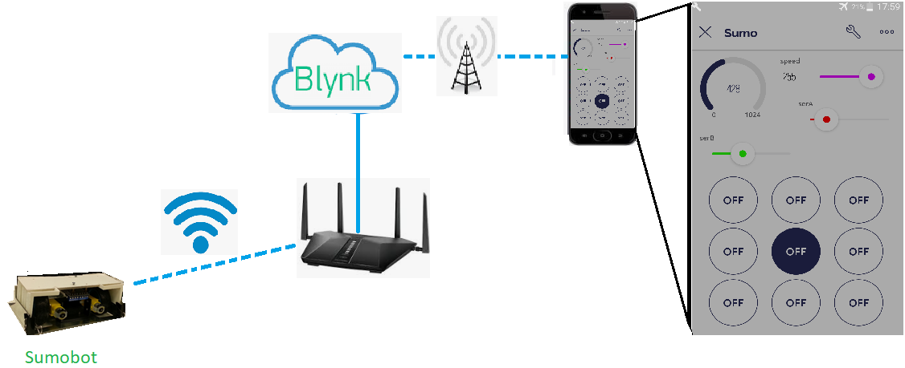
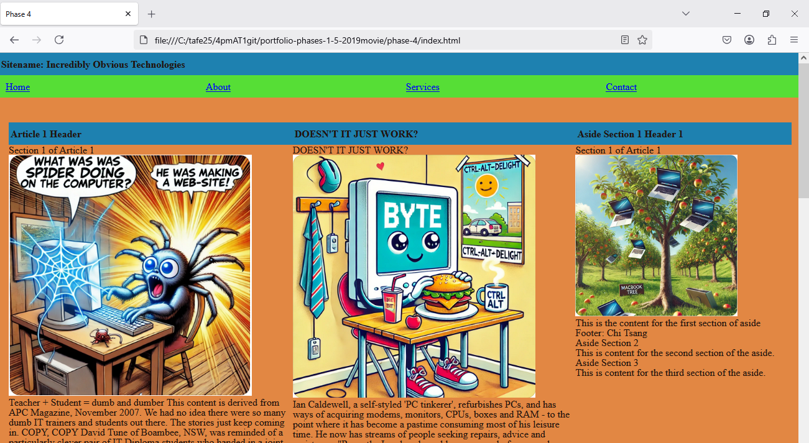
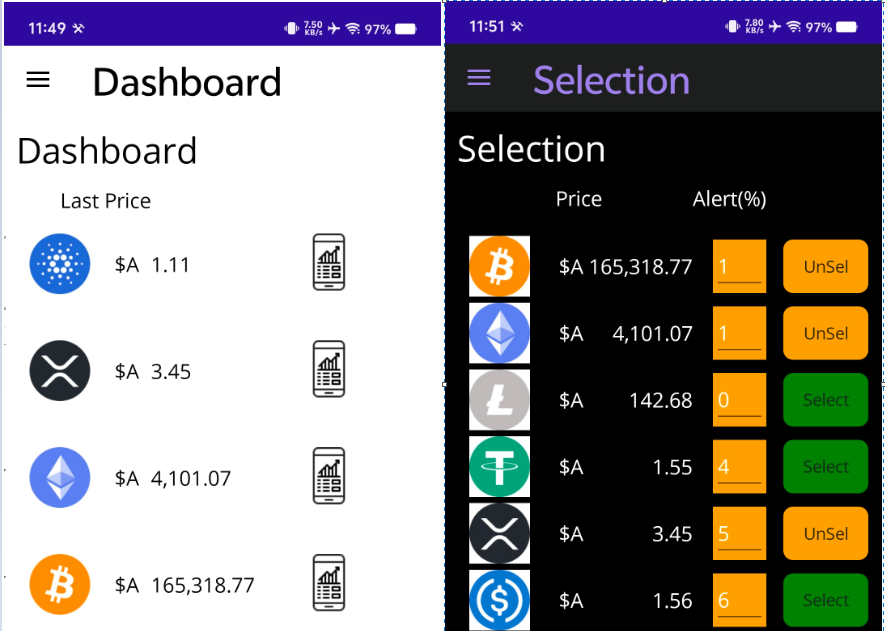

Ninja API App
Try it! By Pick from the following API's
Step 1: check 1 of the following boxes.
Step 2: select an option from the dropdown.
Step 3: click "Get Response" button.
Hope you like the results!
__awaiting response...

Step 1: check 1 of the following boxes.
Step 2: select an option from the dropdown.
Step 3: click "Get Response" button.
Hope you like the results!

The Sumobot Project involved designing and building a robot capable of both remote control and automation. The project was divided into two stages: Stage 1 focused on creating a functional, wireless-controlled sumobot with the ability to move in all directions on flat surfaces, using a web or app interface. Key components included a metal chassis, compact motors, battery packs, and a Wi-Fi enabled microcontroller. Stage 2 introduced automation, requiring the sumobot to detect and react to a white boundary line using sensors. The software was enhanced to handle sensor inputs and integrated with cloud services for simple control. Challenges like sensor calibration, program interrupts, and environmental factors were addressed, demonstrating advanced skills in hardware integration, software development and cloud-based systems.

The Responsive Webpage Project involved creating a modern, fully responsive website using HTML5, CSS3 and JavaScript. The goal was to design a visually appealing and user-friendly site that adapts seamlessly to different screen sizes, from desktops to mobile devices. The webpage utilised CSS media queries to adjust layout and content for various devices, ensuring an optimal viewing experience. Interactive elements like dropdown menus, smooth scroll effects and dynamic content loading were integrated using JavaScript. The project showcased skills in responsive design, front-end development and cross-device compatibility, delivering a high-quality, functional webpage.

The Crypto Watcher App Project involved developing a mobile application using .NET MAUI with C# for both iOS and Android platforms. The app retrieves live cryptocurrency data from a trading platform API, allowing users to track market trends in real-time. Users can customize their watchlist by selecting cryptocurrencies of interest and set price alerts to notify them when prices fall outside a specified range. Additionally, the app offers a set of analysis tools, including price charts and buy/hold/sell indicators, to assist users in making informed investment decisions. The app was designed for smooth, intuitive user interaction and responsiveness across devices. It demonstrated skills in mobile app development, API integration, real-time data handling, and data visualization while incorporating functionality for both user notifications and market analysis. The result is a powerful, user-friendly tool for cryptocurrency traders.